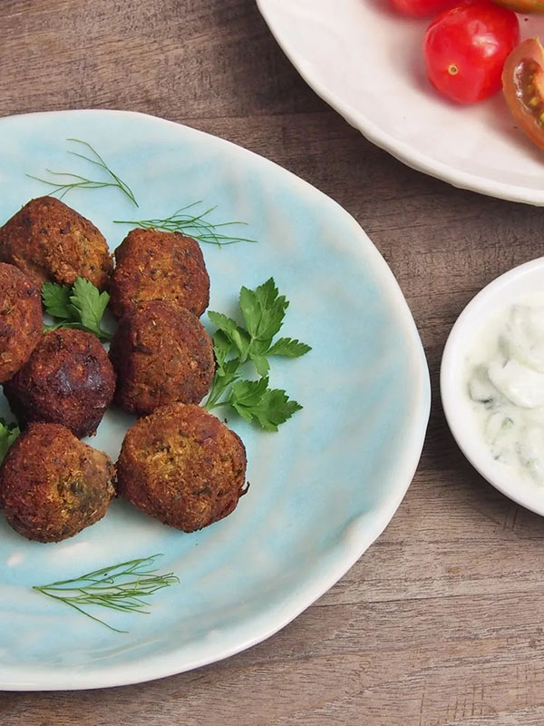

Cauliflower Falafel

Everyone loves falafel!
Everyone loves falafel. Unfortunately, traditional falafel is high
in histamine. This is a healthy low-histamine twist on this
Middle-Eastern classic. The cauliflower, onions, garlic, and
parsley provide histamine-reducing quercetin, fiber, and lots of
micronutrients to sustain your energy for the day.
Yield: 4 servings
Ingredients:
- 2 cups cauliflower rice, steamed and cooled
- 1/2 cup parsley, finely chopped
- 1/2 red onion, minced
- 2 garlic cloves, minced
- 1/2 teaspoon salt
- 1/4 teaspoon pepper
- 1 egg, lightly beaten
- 3 tablespoons cassava flour
Directions:
- Use a paper towel to gently squeeze excess water from
steamed cauliflower. In a large bowl, mix cauliflower,
parsley, onion, garlic, salt, and pepper. Add the egg
and cassava flour and mix well.
- Use an ice cream scoop or spoon to portion balls of
cauliflower mix about 1 1/2 to 2 tablespoons in size.
Gently squeeze and roll into balls and lightly flatten
before placing in a single layer in the air fryer basket.
- Cook at 400 for 9 minutes or until golden brown.
Back Home